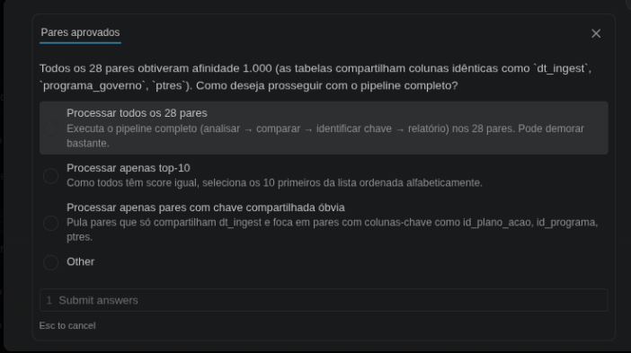

TCC — Fase 01 · Sistema de Integração Semântica de Bases Governamentais

Após a execução da skill /mapear-integracoes sobre o diretório
data/raw/mir-simple-db/, o sistema calculou o score de afinidade semântica
entre todos os 28 pares possíveis formados pelas 8 tabelas do banco.
dt_ingest, programa_governo e ptres.
O top-3 de pares de colunas mais similares — usado no cálculo da afinidade — é
imediatamente saturado por esses campos presentes em quase todas as tabelas.
Como o número de pares aprovados (28) superou o limiar de 10 definido na skill, o sistema pausou e apresentou ao usuário três opções de como prosseguir com o pipeline completo (analisar → comparar → identificar chave → gerar relatório).
| Opção | Descrição | |
|---|---|---|
| ✓Selecionada | Processar todos os 28 pares | Executa o pipeline completo nos 28 pares. Pode demorar bastante. |
| Processar apenas top-10 | Como todos têm score igual, seleciona os 10 primeiros ordenados alfabeticamente. | |
| Processar pares com chave compartilhada óbvia | Pula pares que só compartilham dt_ingest e foca em pares com
colunas-chave como id_plano_acao, id_programa, ptres. |
O usuário escolheu processar todos os 28 pares, sinalizando que a cobertura completa do mapeamento é prioritária nesta fase do TCC, mesmo com custo computacional mais alto.